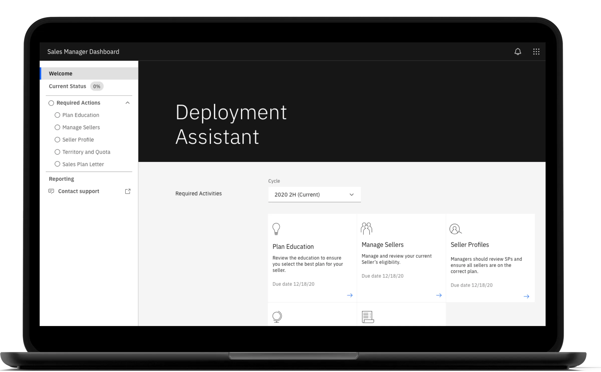
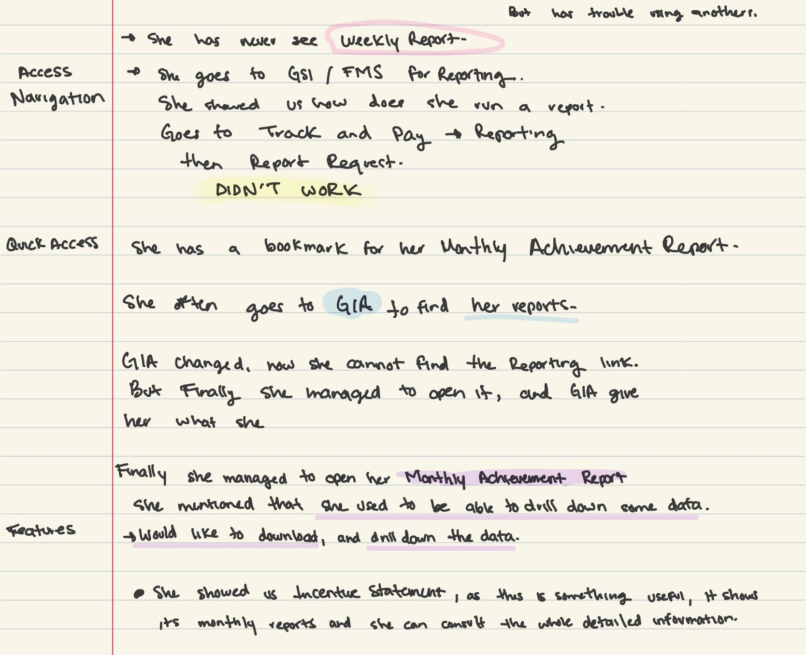
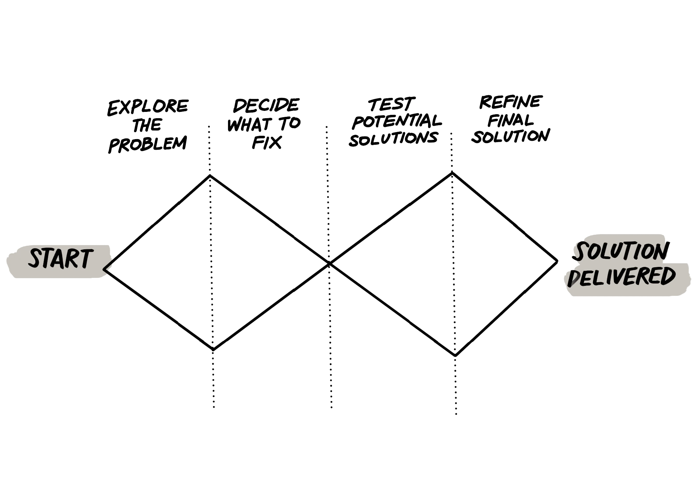
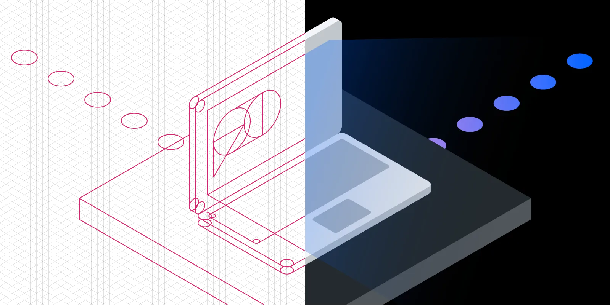

A 3-year modernization of IBM Seller Incentives (formerly FMS): migrating a legacy enterprise platform from Northstar to Carbon, eliminating UX debt through structured evaluation, and improving NPS from −15 to +20 across a globally distributed sales organization of 70,000+ users.

IBM Seller Incentives is one of the most operationally critical internal platforms in IBM's Global Sales Incentives (GSI) ecosystem. The platform is the primary tool sellers and sales managers use to understand incentive structures, track performance against targets, and make compensation-related decisions — at enterprise scale, across every geography IBM operates in.
When I joined in 2020, the platform carried years of accumulated UX debt inherited from its legacy architecture as FMS (Field Management System). Navigation was fragmented, terminology drifted across sections, and key tasks required disproportionate effort — particularly for infrequent users who didn't have the mental model to compensate for unclear IA. Simultaneously, IBM was driving a platform-wide migration from Northstar to Carbon, raising the bar for consistency, accessibility, and interaction quality across all product surfaces.
I was the embedded Senior Product Designer responsible for the UX/UI layer of the modernization effort. My scope covered the full design cycle: identifying and prioritizing UX debt through structured evaluation, designing Carbon-aligned improvements, running design QA with engineering to validate token usage and component fidelity, and tracking improvement signals through NPS trends and qualitative feedback.
A key part of the role was operating at the intersection of design intent and engineering constraint. The legacy codebase made wholesale redesigns unrealistic — the work required surgical prioritization: identifying the changes that would deliver the most user value within the constraints of what could actually be built and deployed without destabilizing production.
Following IBM Design Thinking methodology, the team aligned on outcome-oriented Hills before committing to any design direction. This framing kept prioritization conversations grounded in user outcomes rather than feature lists or visual polish:
The platform's NPS was deeply negative when I joined — sitting between −10 and −15. Rather than treating NPS as a lagging indicator to improve over time, I used it as a directional signal for where to look. Verbatim feedback consistently surfaced "navigation" and "can't find" as the dominant pain themes. This focused the evaluation: the problem wasn't aesthetics — it was discoverability, wayfinding, and cognitive load.

To rapidly surface navigation and usability issues across the platform, I ran a structured heuristic evaluation — reviewing key user flows against Nielsen's 10 usability heuristics, calibrated to IBM's specific product context. The evaluation was designed to produce a shared backlog, not a report: findings were formatted as actionable items that product owners and engineers could reason about directly, with severity ratings and proposed solutions attached.
Findings were presented in a Playback session with the full squad — including developers, product owners, and stakeholders — aligning the team on both the problem scope and the prioritization criteria before any design work began.

The backlog was extensive. Rather than attempting to address everything, I grouped findings into six categories that mapped cleanly to how the product and engineering team reasoned about work — making prioritization conversations faster and reducing the translation cost between design recommendations and sprint planning:
IBM's migration from Northstar (the predecessor design system) to Carbon was not a visual refresh — it was a systematic shift in how design and engineering shared a component vocabulary. Carbon's token-based architecture meant that adopting it correctly required changing not just what components looked like, but how engineers referenced design decisions in code.
My role in the migration included: defining which Northstar patterns had direct Carbon equivalents versus which needed custom adaptation, producing component-level handoff documentation with explicit token references, and running design QA sessions with engineering to verify that Carbon tokens — color, spacing, type — were implemented correctly and not overridden with hardcoded values that would accumulate new debt.

IBM's internal platforms are subject to the same accessibility standards as public-facing products. Carbon DS provides a WCAG 2.1 AA-compliant component foundation — but compliance depends on implementation, not just component selection. During the modernization, I flagged and resolved:
NPS improved steadily at approximately 5–7 points per month during high-activity iteration periods. The platform moved from one of the lowest-rated experiences in the GSI ecosystem to a positively perceived product — a signal that incremental, evidence-based UX improvements compound into measurable trust over time.
This is not a hero redesign. There is no single before/after screen that captures three years of work. What this project demonstrates is a different and arguably harder skill set: the ability to operate effectively inside a large, constrained enterprise system — translating messy user signals into defensible priorities, navigating governance and engineering realities, and delivering consistent incremental improvements that compound into measurable outcomes over time.
IBM platforms don't get rebuilt overnight. They get better — or don't — based on the quality of design judgment applied every sprint, every prioritization meeting, every handoff. That's what this case study is evidence of.
Due to IBM confidentiality requirements, this case study focuses on process, methodology, and outcomes rather than detailed internal screens. Visuals shown are representative artifacts used to communicate the work internally and have been reviewed for public sharing.
{kind=link}
{kind=link}
{kind=link}
{kind=link}